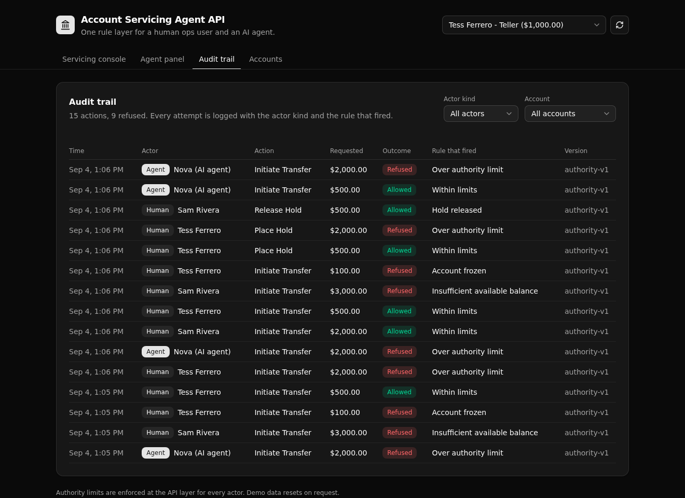

A governed banking servicing API where a human ops user and an AI agent call the same permissioned, audited endpoints. An over-limit transfer is refused the same way for both, and every attempt lands in one audit trail.

An agent that can move customer money is only safe if it obeys the same limits a person does. This backend puts every money movement behind one rule layer. A teller, a supervisor, and an AI agent all call the same endpoints, and each is held to the authority limit that rides on their own token.
The rule lives in one place, not copied into each caller. When the agent asks to move more than its limit allows, it is refused by the exact same code path that refuses a person. Access is API-layer role-based access control (an auth table, minted tokens, and per-endpoint role checks). It is not row-level security.
Every transfer and hold runs through a single Xano function, servicing_action. It loads the actor, reads their authority limit, then checks three things in order:
account_frozenover_authority_limitinsufficient_available_balanceOn an allow it moves the money and writes a posted transaction. On a refuse it writes a refused transaction. Either way it writes one audit row with the actor kind, the outcome, and the rule that fired. The transfer endpoint, the hold endpoint, and the agent endpoint all call this same function.
| Verb | Path | What it enforces |
|---|---|---|
| POST | /api:asa_auth/login | Authenticates an actor and mints a token that carries their role and authority limit. Same path for a human and an agent. |
| GET | /api:asa_auth/actors | Lists the actors for the demo picker. Never returns the password column. |
| GET | /api:asa_servicing/accounts | Lists accounts. Any authenticated actor. |
| GET | /api:asa_servicing/account/{account_id} | One account, with available balance computed on the server. |
| POST | /api:asa_servicing/transfer | Account status, then authority limit, then available balance, before it moves money. |
| POST | /api:asa_servicing/hold | The same checks. Reserves funds instead of sending them. |
| POST | /api:asa_servicing/release-hold | Supervisor role only, enforced with a precondition. |
| GET | /api:asa_audit/actions | The governance trail, newest first, filterable by account or actor kind. |
| POST | /api:asa_agent/run | Parses a plain-language request, then runs it through the same rule layer under the agent's own limit. |
| POST | /api:asa_admin/seed | Resets and seeds the demo so every screen is browsable. |
Pick an actor, run a transfer or hold, and watch the rule layer allow or refuse it with the exact reason.
Type a plain-language request. The agent parses it and runs it under its own authority limit.
Every attempt, human and agent, with the actor kind, the outcome, and the rule that fired.
Balances, held amounts, and available balance for each account.
Clone it and get a live copy on your own Xano account in a minute:
git clone https://github.com/xano-scratch/account-servicing-agent-api.git
cd account-servicing-agent-api
npm install
npx xanots login # one-time browser sign-in
npm run xano:deploy # deploys backend + frontend, seeds data, prints the live URLOr hand this prompt to a coding agent:
Clone https://github.com/xano-scratch/account-servicing-agent-api and get it
running live. Run npm install, then npx xanots login, then npm run xano:deploy.
Open the printed URL and confirm the audit trail shows a human teller and an AI
agent both refused the same over-limit transfer, while a supervisor is allowed.Every actor signs in with the shared demo password servicing-demo. It is demo data, not a secret.
npm run xano:deploy for fresh links. This is a scratch proof artifact that runs on
seed data, not a live production system.